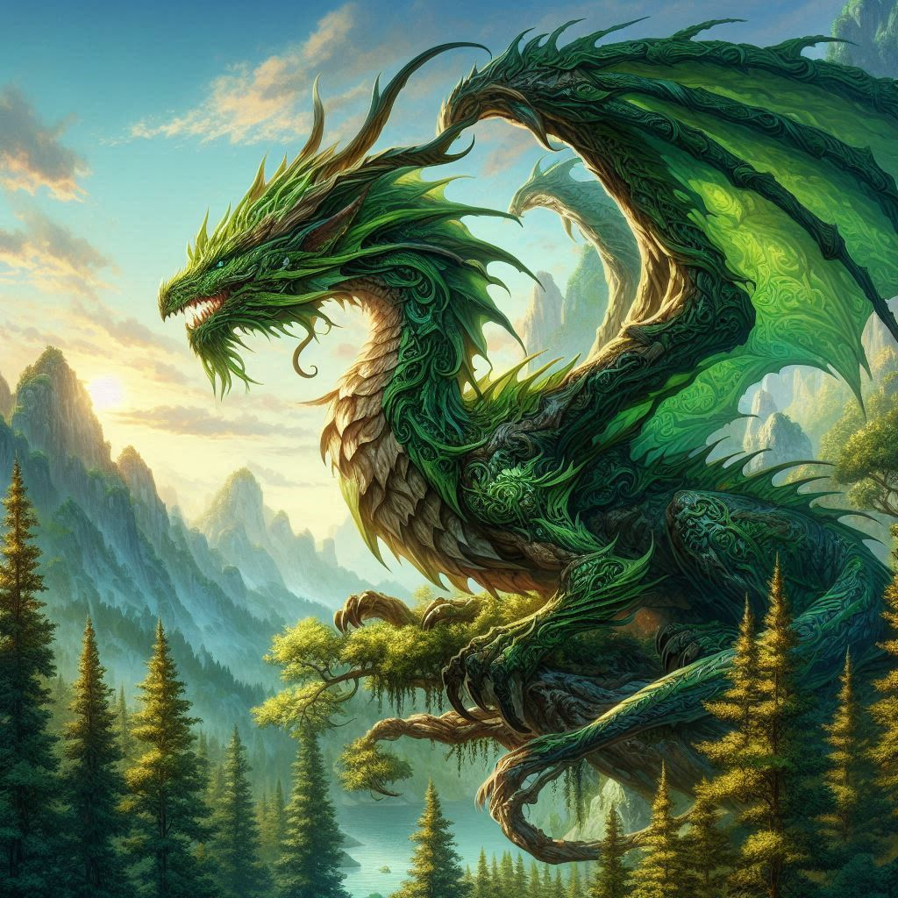

Before the Realms
The Beginning
Before there was light or shadow, law or chaos — there was only The Beginning. A realm neither born nor made, but simply existing, as though the universe itself had exhaled and forgotten to breathe back in.
The universe used to be nothing but an ethereal plane with nothing but magic filling the endless space and a consciousness (that we will call the drifter to make it easy) that flowed throughout it. The drifter was content just floating in this void, but after countless millennia it grew restless. It knew the power it was holding and wanted to put it to use so it started condensing itself into physical beings that could harness the magic and create other things in the physical plane, but its power was too much.
The condensed magic just wanted to flow back into void where it came from and cracks would form as the magic forced its way back out. None of the physical forms could hold enough magic to create things like the drifter without the magic tearing its form apart and dissolving back into magic, so it came up with an idea. The worlds that these beings were going to create would envelop the beings and help stop the magic from breaking through, sealing them in their own creations. The forms started creating different realms encased in a magical veil that would swirl around them as they created more and covered themselves.
And it worked surprisingly well.
Once the forms, now called the Emanations, had created enough realms to cover itself, the magic was contained and stopped tearing them apart. There was only one flaw. The Emanations needed time to create those realms and as they did that, they lost too much magic before they were sealed so the drifter added extra magic that could bleed out but leave them with sufficient remaining to create realms. This had an interesting side effect of the being becoming encased in light as the extra magic forced its way out, but once it was sealed the light stayed shining, providing light to all the realms that were created.

Emanations - AI art is temporary only and will be replaced
Once this process was perfected, the drifter began creating countless Emanations. All of them created that light, all of them created realms with new physical creatures in them, but those creatures couldn't see the beings giving them life. The only thing they saw was the bright light at the center of the realms and other similar lights off in the distance which they called stars, but each one was a new being doing the same thing as theirs.
As more and more realms are created, they cluster around the emanation creating them and start to swirl around it, like holding a cluster of bubbles but a star is contained in the center. As the realms swirl, unavoidably, they collide into each other and when this happens the veils merge and create an opening that connects the two realms. When this happens a magical bridge forms to allow things to cross into the other realm, even if they collide on the top of a realm, they will move around till the bridges connect.
When these collisions happen, many things tend to wander to the other realm. Birds fly through for new nests, animals run looking for food, and people go looking for trades… or spoils. Most creatures know to return to their home realm before the collision finishes and they split because the odds of realms colliding more than once is a rare thing. However, many things have either not gotten back in time or deliberately chosen to stay in a new realm. Whenever that happens they are considered realmless and each realm treats them differently. Some have housing for them, others have prisons.
Divine Realm
The Church of Realm Light
Order is not found — it is built, stone by stone, edict by edict, sacrifice by sacrifice. The Church of Realm Light is not the divine. It is freeing it.
Each of the Emanations created realms in different ways and for different reasons, growing their own personalities and desires for the realms. The drifter never forced them to create in any specific fashion, the only limitation they were given was that once they created a realm, they could only observe it and watch it grow. They weren't playing god, they were adding variety to a uniform existence. This gave endless possibilities for different realms, but one thing was always consistent. Each realm needed something to contain the magic holding it together so each one had a realm source. This could be anything and represented how magic was held in the world. Some were crystals (which many of the first realms did), but as the Emanations became more clever, different things started becoming the source such as a mountain range, a certain species of creature living there, the bloodline of a family, some even had it split amongst different things.
One Emanation named Raziel created by the drifter loved to create puzzles for their realm sources. They created realms that hid the source in plain sight with clues to the whereabouts. It used a symbol to represent the realm source and each puzzle had a new way to show it, like a mountain range in the shape of the symbol, a scale pattern of the species of fish, a birthmark on the bloodline, or different objects that combined to reveal it.
In one of its realms, there was born a great mathematician and magical scholar named Lyra. From a young age she noticed the intricacies of the realms and dedicated her life to understanding them, traveling from realm to realm uncovering their hidden secrets and not caring that going home wouldn't be an option if she followed that path. Raziel took notice and though each entity vowed to not directly interfere with the life they created, as was the drifter's desire, this emanation would place certain realms in the mathematician's way to challenge her. This became the favored activity for them as the puzzles became more and more elaborate just to still be solved. It felt like a short time to the Raziel, but it was decades for the mortal and one day, before the deity even realized what was happening, she died of old age.
This distraught Raziel so much that they refused to let the game be over and, against what the drifter had instructed, took the realm source of her current puzzle and fused it to her body. This magic surge brought her back to life and restored her youth, but with the source not connected to the realm it collapsed as its veil tore itself apart. The mortal became conscious just in time to witness the realm collapse. The veil around the realm shredded as if the most delicate fabric was thrown in a hurricane and all of its contents dissolved back into magic without the veil keeping it in the physical plane.
Lyra found herself floating alone in the void, but a slight glow surrounded her and she stayed alive. She was sustained by the magic now within her, but she didn't even have time to notice. In that brief moment between death and the realm source bringing her back, she saw things no mortal was meant to see. The realm source, being a piece of the emanation, gave her knowledge and she saw Raziel trapped within the star at the center of the realms. She saw a realm flow out of Raziel's chest and join the rest in the swirling cluster that surrounded the deity (as she now believed it to be a god), and she felt its sadness at her death.

Lyra - AI art is temporary only and will be replaced
After a few moments the surrounding realms rushed in and filled the empty space she was floating in and unlike when things normally touch the veils around realms and they turn back into magic, she passed right through the top and started plummeting to the ground below her, but she didn't even notice as her mind raced. She crashed into the ground creating a crater in the earth below her, but the realm source protected her body and she laid there just thinking.
It was trapped
They were trapped.
.
.
.
And we all benefit from their suffering.

Symbol of the Church
How is it fair that we get to live free on their suffering? Each realm steals a piece from them, she saw it! And how long had they been doing this? Thousands of realms, centuries of history are written. This being has been trapped for centuries or longer, forced to create worlds for whatever horrible purpose and those worlds are draining it.
She didn't know the whole truth and how wrong she really was, but would you? A mortal given knowledge that no mortal should have ever seen. Wouldn't you believe that was the whole truth?
These thoughts spiraled in her head and at that moment she knew she had to free them, and after witnessing a realm collapse, she knew exactly how to do it. THe main problem was there are thousands of realms and more keep getting created. How could she get enough of them in time? And then the solution presented as a voice called out to her.
"Umm…. are you ok? You just fell from the sky! What happened?! Where did that realm go?!"
She wouldn't do it alone, but how could she convince people to give up there lives for this cause? It wasn't their fault that this is how they were created. They dont deserve to die… but the diety doesn't deserve to suffer either and its been suffering longer than any creature in any realm because they were all born from the deity's suffering.
So she needed to convince people this was the truth and have them willing to sacrifice their life for the cause, but also end the realms in a way that doesn't cause innocent people to suffer for no reason. Her solution was to gather enough realm sources as she could and destroy them all at once. It would take longer because the more time they took to collect, the more realms were created and the longer the deity would have to suffer. She wanted to free it, but still wanted to give everything alive as much time as possible to live their lives because it wasn't their fault.
She didn't want to do this mind you. She hated the thought of people who did nothing wrong dying due to someone, or something else's choice, but she couldn't let the deity suffer and this was her compromise.
She also had the perfect way to convince people of the truth. She spent her whole life finding the realm sources and the symbol that the deity used for them that she could find them fairly easily, especially in realms the deity didn't create as a puzzle specifically for her (though she didn't know that part either). And because they all shared the same symbol, she could use it to prove to people her story was true.
There was a side effect that she never considered however. As the years passed and she convinced more people, they noticed her age never changing and started worshipping her as the one sent by the deity to free it and show the people the truth… and she hated it. At first she kept trying to deny it, she never wanted to be worshipped or praised, or even thanked. She just wanted to free the being that she believed was suffering. However, as people kept worshipping she noticed people more easily started following and needed less to be convinced. She still never accepted it because she didn't believe it to be true, but she did stop correcting it.

A Priest of the Church - AI art is temporary only and will be replaced
And so The Church of Realm Light began.
Industrial Realm
Gearhollow
When a bullied, flame‑scarred dragon forges himself into a god of metal and magic, an entire realm is forced to reckon with the price of his rise.
Centuries ago, this realm crashed into Wyrmreach, another core realm. The dragons of that realm usually fight over taking control of a realm, especially one this large and old… but that wasn't the case this time. Vast open plains with barren mountains and few obvious resources made them believe this realm wasn't worth it, all but one. Kotik was smaller, weaker, and more timid than the rest. His one saving grace was having hotter fire than any other dragon in the realm… though that doesn't help when all your competition is immune. Any realm he tried to claim was easily ripped from him by any other that , but this one was open for grabs. He took his chance and left his home behind, hoping to claim this land for himself.
There really wasn't much in this realm. A few developing communities with small farms and a few sparse herds of animals lived in the plains. It was obvious why no one else cared about this realm, but it was paradise for Kotik.
These developing societies were terrified of this new threat. Hardly anything in this realm could fly, let alone rain down a hellfire that even water had a hard time smothering because it evaporated before it touched even the wisps of the flames. They quickly started making offerings to him to stop the destruction and save their meager villages. Finally being feared and looked upon with respect (from the fear but respect none the less), Kotik accepted the offerings and ruled over the realm.

Kotik - AI art is temporary only and will be replaced
It was a simple life, but one that Kotik cherished. After decades of being bullied and beaten by other dragons he finally felt powerful and had a place. He might have been the weakest dragon, but he was still a dragon and even during collisions it was easy for him to hold off attackers and… "negotiate" trades.
On one of these collisions however brought a new challenge, another dragon. One that remembered him in fact, and not in a fond way. He bashed Kotik and scoffed at his miserable realm and wreaked havoc across the entire thing then left laughing as he left the realm at the last moment before the realms split. The fire inside Kotik burned hotter than ever in that aftermath and he knew something had to change, ruling wasn't the end goal anymore. He saw those other civilizations on different realms and knew there had to be more than he thought in this realm.
He scoured the realm and specifically searched the mountains and what he found was an abundance of copper and silver hiding inside all of them. With this discovery he put his people to work. They started extracting the ores and creating tools and weapons, but it wasn't enough so Kotik started experimenting. They had tried to make an alloy out of the metals before but they never wanted to mix, but Kotik had an idea. Instead of the normal furnaces and kilns they had been using, what if he used his own fire?
The heat was so great that Kotik had to hold the ores in hands at first because no vessel could withstand the heat. Between breathes Kotik could see the metals melting and swirl together, but they wouldn't mix, just swirled around, but it was progress. He put more breathes into it, deeper breathes that made it heat even more and slowly sparks started to jump from the mixture. More and more sparked until the liquid in his claws was one solid color. He let it cool slightly before putting it into a mold and letting it set. Once it had cooled, something magnificent had appeared. It looked like copper, but it had a bright polish to it and a rainbow iridescent sheen that changed depending on the angle you viewed it from.
They started experimenting immediately and found it was not just an amazing heat conductor, but now magic flowed and transferred in it just as easily. This unlocked an entirely new world. Tools that used to dent and wear down were fortified, bolts holding things together were replaced by magical welds, crops cared for with imbued tools grew better and didnt wilt. This changed everything. Society started progressing quickly, the scattered groups combined to one big city, people experimented and learned more than ever before and started to thrive. But Kotik changed most of all.

Apparatus Dragonling - Art by Kriss09
One other thing he found while searching through the mountains was a bright shining green crystal full of magic. It felt as if this realms entire existence hinged off of it but he couldn't explain it, but with this new alloy, named Kotikite, he had an idea. He forged himself a new body. Using pure kotikite, he created a mechanical body with the crystal at its core and used its magic and his heat to weld himself to the new body and merge his soul with it. No longer would he be the smallest dragon, or weakest dragon… some debate whether to still call him a dragon anymore, but that strength was now his.
Then the Church of Realm Light appeared. Lyra herself had shown up to try and convince Kotik of the cause and to relinquish the realm source, but he wouldn't have any of it and tried to scorch her where she stood, but she stood there unaffected. Lyra always tried to avoid shows of power but this seemed like an exception. She reached out and used her magic to grip realm source in his chest and squeezed. Not enough to hurt it, but enough for the magic to wane and kotik to collapse to his knees. He realized her question was a formality and not a request, but he had just received this power and wasn't willing to give it up so he offered an exchange. He offered Kotikite to her and told her how they were making progress on finding a way to link to other realms. This was exactly what Lyra needed. A way to get her followers to different realms instead of her traveling to all of them. They came to an agreement that if Kotik was able to make this possible and provide it for her followers then they would not take Kotik's realm source. When the day finally came to release the deity, his realm would stay standing, but she couldn't promise safety because she didn't know what would happen after that.
And it worked. They were able to make portals out of Kotikite that could be set up on another realm and magically linked back to Gearhollow. This is when the church gained a lot more pressence and sway in the realm. Now more followers could join and head back to this realm even after a collision and people could revisit a realm if they weren't able to find the realm source in time. Making Kotikite was more important than ever and because Kotik himself was the only one that could make it, he had to work extra and he wasn't able to contribute to research.

Arcane Cannon Blast - Art by Vladimir Solnyshiko
From this moment on, progress became the focus. If you could help improve this realm then you were cherished and given resources to do your work and if you couldn't, you worked in the labor force either mining ores, growing crops, guarding the walls of the city, etc. This created a natural divide in the people that slowly kept growing until the city was split into 2 distinct sections. The center of the city is The Spires, full of workshops and the highest tech invented so far with clean streets because of magical steampunk robots that do all sorts of work so people can continue their research. The area is full of kotikite with the mechs performing labor tasks, pipes leading to workshops, doors of high end establishments and much more which gives The Spires a glow to it and at the center is Kotik's workshop is, like if a castle and workshop were smashed together to give functional high class. Engineers were focused on improvements and upgrades but Kotikite was at the center of it all.
The other section that surrounds the Spires is Ironroot where the working class lives. While it's not harsh and miserable slums, it is obviously less looked after and built on necessity, not advancement. Copper still runs through this area, but it is plain copper that tends to dull and corrode. Housing is fairly tight as apartments are stacked to use the most of the space and taverns are one of the few amenities to relax and hardly any technology is used to improve life instead of productivity and this difference in living standards made some in Ironroot feel… jealous.
One City with Two Hearts
Though The Spires and Ironroot share the same walls, they live by different truths.
In The Spires, contribution is currency — even a food‑cart vendor outranks a miner if their work fuels innovation.
In Ironroot, people say a quieter phrase: "Contentment is survival." It's why the Church of Realm Light struggles to gain influence there
Primal Realm
The Untamed Lands
Beneath roaring waterfalls and temples swallowed by vines, the friendship of Hao Qui and Bei Pan shattered, echoing through the Untamed Lands like a wounded god's cry.
The Untamed Lands were a continent where life ruled with ancient ferocity. In Axiomara a desert-savanah, discipline and the harsh environment shaped warriors into living sculptures of precision. In the lush forests of Koora'Vale, magic flowed through eucalyptus towers and owl‑koala mystics. And in the thunderous and mountainous region of the IronWilds, beasts fused flesh with steel to carve their own evolution. But none of these lands matched the raw, unyielding power of the jungle region — Conglin Zhidi, the Verdant Maw, where roots strangled stone and the jungle itself breathed with ancient hunger.
In Conglin Zhidi, the red panda‑ape clans ruled from the towering capital of Pan'Qorath. Their monarchy held ceremonial authority, but true power lay with the military — and with those strong enough to command it. Deep beneath the jungle, hidden behind a waterfall and guarded by Mayan‑style temples, pulsed the greatest secret of the Primal Realm: Zhen'Xibal Cavern, the Cave of the First Breath, home to the Realm Source. Only the royal line knew its true entrance, for even their strongest warriors could not be trusted with such power.

Zhen'Xibal Cavern - Art by Yassine S.
Hao Qui and Bei Pan grew up together in the Scarlet Boughs, dreaming of joining the military that protected their homeland. Hao Qui was enormous even as a cub, a natural warrior whose strength made him the pride of their village. Bei Pan, smaller and sharper, relied on wit rather than muscle. Though different in every way, they were inseparable — brothers in all but blood, united by ambition and loyalty.
When war erupted between the regions of Conglin Zhidi and Axiomara, both enlisted. Hao Qui became a force of nature on the battlefield, his fury carving a path through the disciplined Berserkers of Axiomara. Bei Pan, meanwhile, built a network of spies and informants, guiding Hao Qui's campaigns with strategy and precision. Together, they rose through the ranks, their names spoken with awe across the jungle.

Hao Qui - AI art is temporary only and will be replaced
But victory brought change. Hao Qui fell in love with a healer from the Jade Floodways - a common area and trade center, a gentle soul who soothed the rage that had fueled his rise. Bei Pan had long harbored feelings for her, feelings he never confessed. Watching her choose Hao Qui — the warrior who already had everything — planted a seed of bitterness in his heart. When Hao Qui married her, that seed grew into something darker.
As the war neared its end, Bei Pan's spies uncovered the truth of the Realm Source and it's hidden location. He kept this knowledge secret, believing it might one day elevate him above Hao Qui. But before he could act, tragedy struck — or so it seemed. Hao Qui's wife and unborn child were murdered in what appeared to be Axiomara retaliation. In truth, Bei Pan himself orchestrated the attack, framing the surviving Berserkers to shatter Hao Qui's spirit.
Consumed by grief, Hao Qui unleashed a massacre upon the captured berserkers, losing himself to the rage he thought he had buried. When the bloodshed ended, he turned to Bei Pan for guidance, desperate for someone to anchor him. Bei Pan comforted him with false sympathy, urging him to step down from leadership. But Hao Qui refused, clinging to duty even as guilt tore at him. Bei Pan realized then that Hao Qui would never yield — not to him, not to anyone.
Driven by envy and ambition, Bei Pan sought the Realm Source itself. He found the hidden entrance to Zhen'Xibal Cavern and reached the heart of the jungle's power. Hao Qui followed, arriving just as Bei Pan began to draw the Source into himself. In the cavern's emerald glow, Bei Pan revealed the truth — the jealousy, the manipulation, the murder. He struck Hao Qui with primal energy, scarring his face with a black line across his face and turning one eye a permanent blood‑red.
In a moment of desperate instinct, Hao Qui reached out to the Realm Source remotely — something no mortal had ever done. The cavern trembled as vines and roots surged to his call. Fueled by grief and fury, he fought back, severing Bei Pan's arm in the final clash. Wounded and enraged, Bei Pan fled into the night, crossing into Gearhollow to rebuild himself with metal and machinery.

Bei Pan - AI art is temporary only and will be replaced
Years later, Hao Qui — scarred, burdened, and seeking redemption — followed rumors of a portal to Gearhollow found in the IronWilds. There, in the roaring forges of Anvilheart, he encountered Dr. Fenlo, a strange being, a human engineer who recognized the pain behind the warrior's rage. And so began the next chapter of Hao Qui's journey — a path that would lead him into copper‑clad lands, toward a final reckoning with the brother who betrayed him.
Hybrid Creature
When the realms brushed against one another in the great Collisions, life itself unraveled and rewove. Animals caught in the cosmic surge merged with the echoes of other worlds, creating the red panda‑apes, lion‑whales, koala‑owls, and countless other hybrids.

Panda Scout - Art by Shai
Arcane Realm
Ebonflare
In a realm where magic bleeds across the sky, its people are too busy warring to notice the entire world is about to drown.
Long before written memory, Ebonflare was a realm so saturated with raw magic that it bled across the sky in brilliant leylines—rivers of power that pulsed like living veins. These lines converged at four ancient nexuses, each formed when the world's original magic source shattered in a cataclysmic collision. Though broken into fragments, the source still behaved as a single heart, and the leylines emerged to reconnect its pieces. At the southern edge of the realm, the site of the original impact became a vast crater‑gorge filled with jagged purple crystals, humming with the oldest and most volatile magic.

Leyline Crystal - AI art is temporary only and will be replaced
To the west, the land softened into a lush blue‑hued basin where rivers and streams wound through lakes and ponds. The main river carved a deep gorge where early settlers built their homes along the stone walls. At the gorge's end, water spilled over the realm's edge into the void—yet never fell. Instead, it struck the shimmering veil that surrounds all realms, dissolving into radiant mist that drifted back upward and condensed into blue crystals. These crystals continually melted into fresh water, creating an eternal cycle that sustained the region.
Northward, the mountains rose like broken teeth. When the ancient collision drove magic deep into the planet's core, it ricocheted violently, superheating the stone until the range erupted into a chain of volcanoes. Over centuries, the magic settled into the rock as red crystals, hidden deep within the mountains. Only a few shards glowed at cave mouths, but beneath the surface lay reservoirs of molten power that shaped the Ashblood clan and their fiery temperament.
To the east, the land that once bordered the purple crater was blasted skyward during the collision. The fragments drifted, fused, and stabilized into a constellation of floating islands, each buoyed by massive green crystals embedded beneath them. These crystals exuded refined, buoyant magic that kept the islands aloft and shaped the Glimmerscale clan's elegant, lofty culture. The islands drifted in slow, graceful patterns, tethered only by the green leyline that pulsed beneath them.
For millennia, the Dragonkin—reptilian, serpentine, and shaped by the crystals of their homelands—lived in harmony with the leylines. They understood the world's balance instinctively, passing knowledge through ritual and memory. But everything changed when another collision tore open the veil and brought humans into Ebonflare. The Dragonkin taught them, welcomed them, and shared their understanding of magic. Yet over centuries, human ambition twisted into manipulation. The most gifted became wizards, and through political cunning and arcane dominance, they seized control of the leylines and built the towering central city.
The wizard clans—Ashblood, Crystalline, Glimmerscale, and Stonehide—formed a ruling council, each sending a representative to govern the realm. Their city, anchored at the leyline crossroads, slowly siphoned magic inward, weakening the outer regions. The wizards saw themselves as elevated beings, their elongated features and extended lifespans proof of magical superiority. Non‑magical humans and Dragonkin were treated as lesser, sparking resentment that grew into rebellion. Radical factions on both sides committed atrocities, each convinced the other was the true threat, even as society fractured.

Wizard Tower - AI art is temporary only and will be replaced
Clan Appearances
Ashblood — Ashblood wizards bear a gray skin tone, burning red irises, and black hair, their black robes marked with soot‑like patterns from their volatile magic. Their Dragonkin counterparts are black‑and‑red scaled with dry, rugged hides, shaped by the heat of the volcanic leyline.
Crystalline — Crystalline wizards have white hair, violet eyes, and wear grey robes adorned with purple gemstones that resonate with the arcane leyline. Their Dragonkin are studded with fragile purple geodes, powerful but brittle embodiments of raw crystal magic.
Glimmerscale — Glimmerscale wizards are tall, elegant figures with blonde hair, green eyes, and flowing robes of gold and emerald that reflect their cultured refinement. Their Dragonkin allies shimmer with polished scales and graceful movement, embodying the artistry of the floating isles.
Stonehide — Stonehide wizards are stout, practical humans and dwarves with bald or brown‑haired heads, clad in grey robes or reinforced armor built for labor and invention. Their Dragonkin possess earthy brown and sandy‑toned hides, tough and unyielding as the stone they draw strength from.
At the center of this turmoil stood Zyrrien, the Crystalline Grand Wizard—one of the few who recognized the true danger. A massive water realm, a bubble of oceanic life, was drifting toward Ebonflare on a collision course. When realms collide, one floods the other, and both ecosystems collapse. Zyrrien sought unity to prevent disaster, but the council was distracted by rebellion and political ambition. Valkor, the Ashblood representative, coveted the grand seat and secretly fed intelligence to Dragonborn rebels, hoping chaos would unseat Zyrrien. He believed the water collision would be survivable—and exploitable.

Zyrrien the Grand Wizard - AI art is temporary only and will be replaced
Meanwhile, the rebel forces rallied under Caxoris, an Amethyst Dragonborn captain unknowingly manipulated by Valkor. The Stonehide representative, Ghesh, had vanished—captured by rebels with help from the Church of Realm Light—while Reshir of the Glimmerscales indulged in luxury, ignoring the crisis. As the leylines weakened and the water realm loomed ever closer, Ebonflare's people tore each other apart. Too blinded by hatred, ambition, and fear, they failed to see that their greatest enemy was not each other—but the unstoppable flood racing toward them
Arcane Realm
Aetherwyn
When the realms collide and ancient dragons stir, a forgotten prophecy awakens—foretelling Rogoth's return and the shattering of a world unprepared for the darkness rising beneath it.
Long ago, at the dawn of creation, this realm was forged by an Emancipation. Wyrmreach, one of the earliest worlds birthed and filled with magical dragons, moved toward its first cataclysmic collision. Aetherwyn is a large, single continent world originally only inhabited my small groups of eleven people living off in the forest land and goblins and orcs nested in the gorges and caves of the western mountains The forest and mountains were divided by vast meadows and plains keeping the interactions between the two species mostly separate.
Two of the first ancient dragons of Wyrmreach, seeking to expand their power and influence, crossed into Aetherwyn unaware that they would one day need to return. These dragons were Gaida the Creator and Rogoth the Ancient.

Gaida, the Creator - AI art is temporary only and will be replaced
Gaida, a dragon infused with the essence of nature, was immediately revered as a god among the elven people, for she embodied their culture and their deep affinity for the natural world. Meanwhile, Rogoth—with obsidian scales and dark, burning red eyes—settled in the mountains, ruling the goblins and orcs through fear.
While the elven kind of the east and the goblins of the west mostly kept to themselves, humans were eventually introduced to the world through a second collision, centuries after the first. These humans settled across the plains, and their relentless thirst for expansion brought new chaos—igniting constant wars with both the elves and the goblins. When the second collision reshaped the world power surged through the land and the mythical dragons surged with unseen power. Rogoth became ravenous and seeked total destruction. Not wanting to see the beautiful world she had helped shape, Rogoth was forced into slumber deep within the Shattered Isles, bound by Gaida's sacrifice. Yet the binding was never meant to last. As the realms drift closer to another collision, Rogoth's influence stirs once more, seeping into the Scarred Peaks and corrupting the primal storms that rage above Bloodspire Watch the peak of the highest mountain.
The elven homeland became known as the Eldrathil Expanse. Many of its forest‑cities were grown from living crystalwood—a magical wood shaped by Gaida herself—interwoven with glowing spires and magic‑forged stone. At its heart rose the Lethrein Spire, the capital, governed by the Elder Elves who formed the Luminous Conclave.
A Prophecy of Nature
Every full moon, the crystalwood trees of the Eldrathil Expanse hum with a low, resonant tone—an echo of Gaida's heartbeat. The elves believe that when the hum falters, a great imbalance is coming… and the last time it fell silent was the night Rogoth was first bound in the Shattered Isles.

Ranger of the Midrealm - AI art is temporary only and will be replaced
The Midrealm Plains, where the humans first settled, were perilous lands. When they established their early camps in the open grasslands, dragons found them far easier prey than the hidden goblins and orcs who dwelled in deep ravines and shadowed caves. That changed with Maelor—known for his iron will—a stocky, broad‑shouldered man with a great brown beard and a trusted hammer later named Skyshatter. He became the first human to slay a dragon.
Maelor gained unnaturally long life after consuming the dragon's heart and taking its power into himself. But the act changed him, awakening a hunger for the eternal life possessed by mythical beings.

King Maelor - AI art is temporary only and will be replaced
From that moment, he became King Maelor, the Ironcrown, and founded the capital city of Heldstrum. Under his rule, humans secured dominance over the Midrealm and pushed their influence east and west over the following decades. Yet the people grew uneasy, for the King did not seem to age.
His ravenous desire for power never faded. In time, he made a terrible sacrifice: using his stolen power to drain the life from his own children. To keep suspicion from the people, he staged his own death and allowed it to appear that his last surviving son continued the royal line.

Skarrfall Goblin - AI art is temporary only and will be replaced
The Scarred Peaks of the West Mountains were lands of constant danger, where survival hinged on enduring threats from both the sky and the humans who coveted the region's minerals, ore, and unclaimed territory. The promise of riches turned the region lawless, drawing berserkers of every species—warriors loyal to no banner but their own strength and the might of whoever ruled them. The most feared places among these wild reaches were Skarrfall Gorge, the primary mining ravines, and Ashmaw Hold, the largest encampment of berserkers and arms‑dealers.
Soon devastation loomed in the distance with the inhabitants unaware of another collision that had not been seen in thousand of years.
Across the continent, signs of Rogoth's awakening spread like cracks in glass. Berserkers in Ashmaw Hold speak of a "Black Flame" whispering in their dreams. Skarrfall Gorge miners uncover obsidian scales fused into the stone, still warm to the touch. Even the dragons of Emberfall Crater sense the shift, their ancient instincts warning them that the balance Gaida forged is unraveling. Meanwhile, King Maelor's growing corruption — born from consuming a dragon's heart — resonates with Rogoth's rising power, drawing the immortal king toward a destiny he does not understand. His unnatural life becomes a beacon, a tether pulling Rogoth back into the world.
The Luminous Conclave, long suspicious of Maelor's immortality, finally uncovers the truth hidden in the oldest shrine of Caelwyn Rest. A prophecy, etched in crystalwood and sealed by Gaida herself, speaks of the Shattered Crown — a moment when the realms align, and the one who bears stolen dragon‑life will either awaken Rogoth or destroy him forever. The Conclave realizes with horror that Maelor is not merely a tyrant; he is the key to Rogoth's return. Their centuries‑long mission to end the Malorean line becomes a desperate race against time, for killing Maelor too soon could shatter the seal and unleash Rogoth in full.
Caelwyn Rest
The spiritual center of the elves and home of Gaida's shrine.
As tensions rise, the Midrealm Plains fracture under Maelor's tightening grip. Rebellions spark in Ravenshore and Silverreach, while monks from Samanera warn that Maelor's soul is splitting — one half still human, the other becoming something ancient and draconic. The Scarred Peaks erupt in chaos as berserker clans unite under a mysterious warlord claiming to wield Rogoth's blessing. Even the dragons of the Shattered Isles begin to choose sides, torn between fear of Rogoth's dominion and the hope that Gaida may yet return to oppose him.
When the third collision begins, the sky fractures with storm‑fire, and the world trembles as Rogoth's prison cracks open. Maelor, driven by desperation and the prophecy's weight, must confront the monstrous truth of what he has become. The elves rally under the Luminous Conclave, the berserkers march behind the Black Flame, and the dragons descend from the Shattered Isles as ancient rivalries ignite once more. In the end, the fate of Aetherwyn hinges on a single choice: whether Maelor embraces the last spark of humanity within him — or becomes the vessel through which Rogoth the Ancient returns to claim the world.